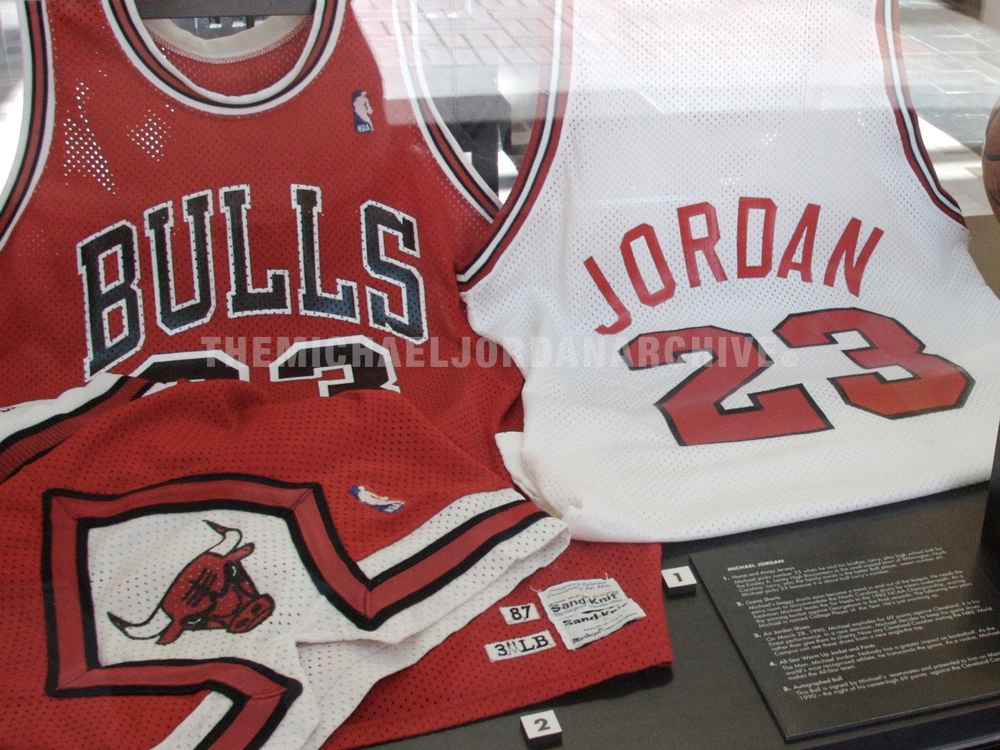
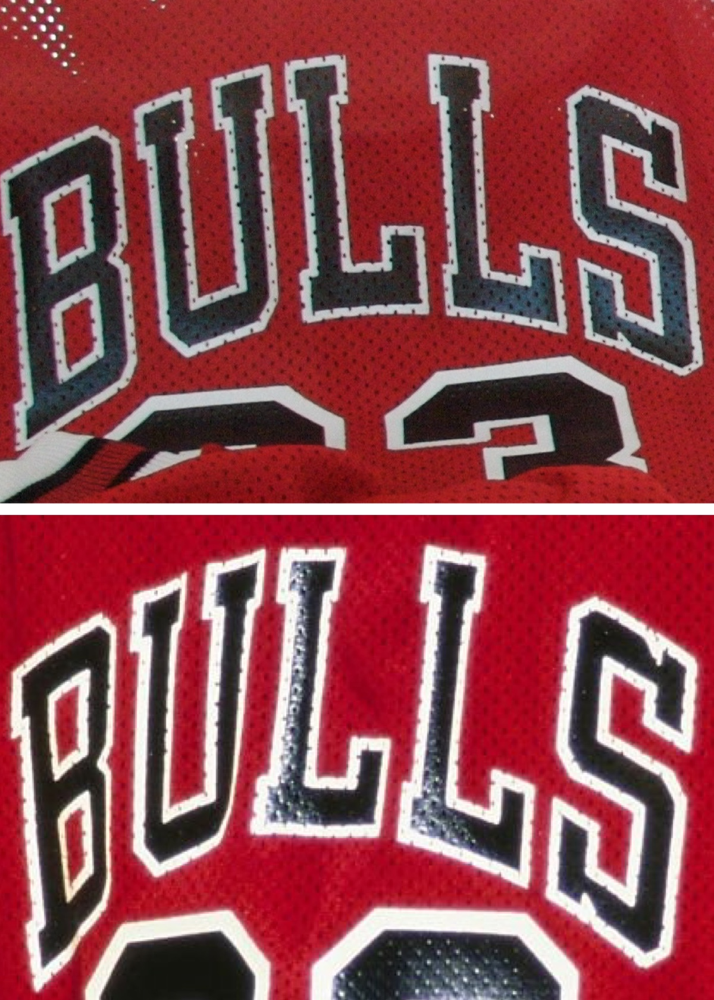
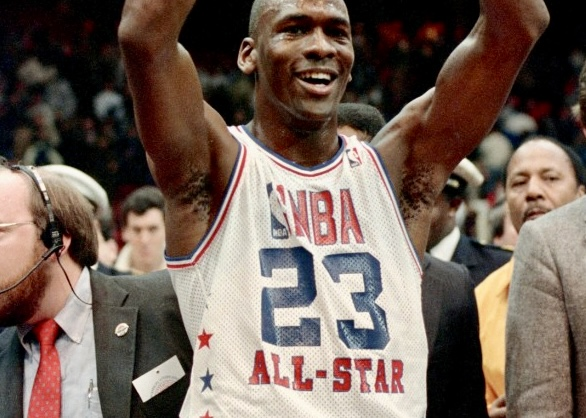
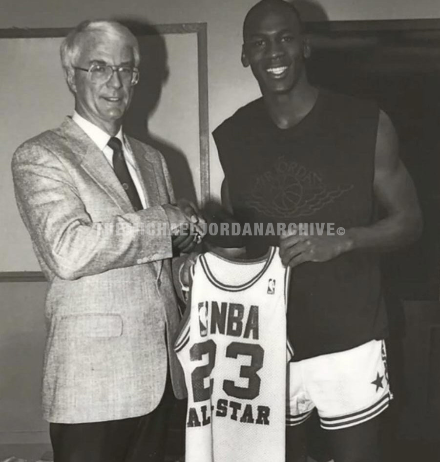
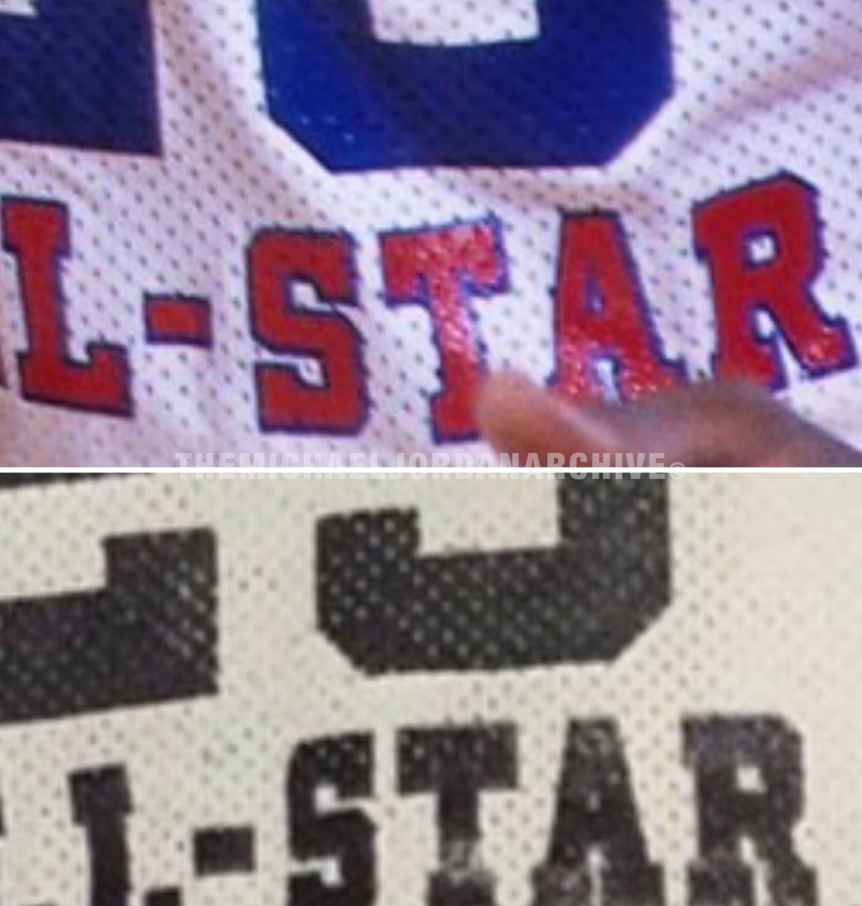
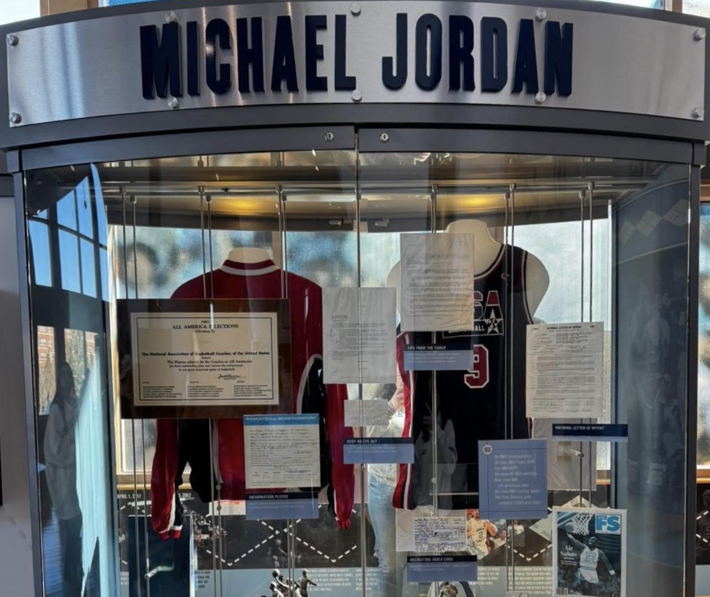
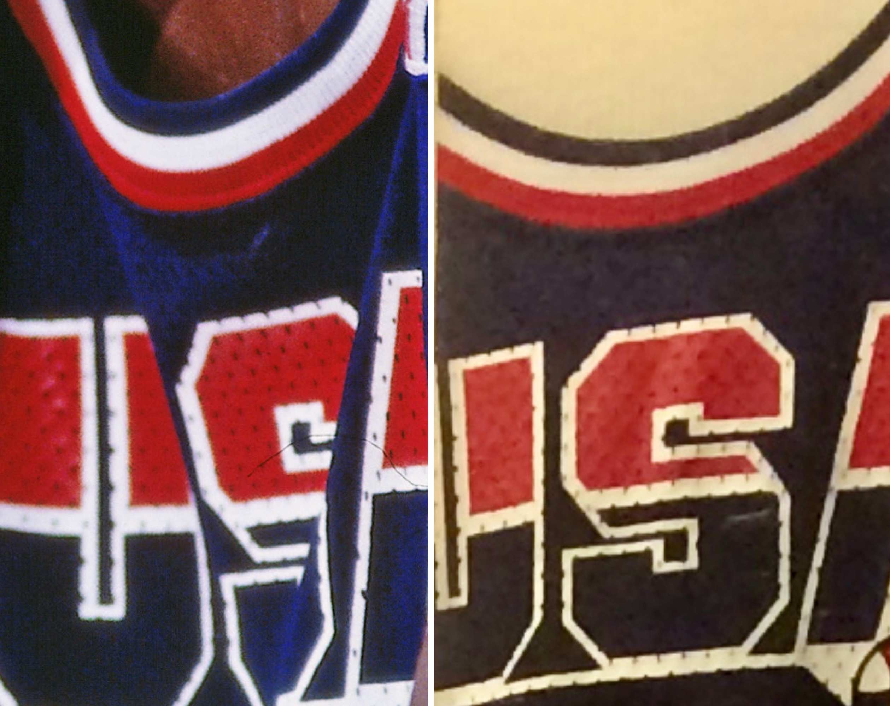
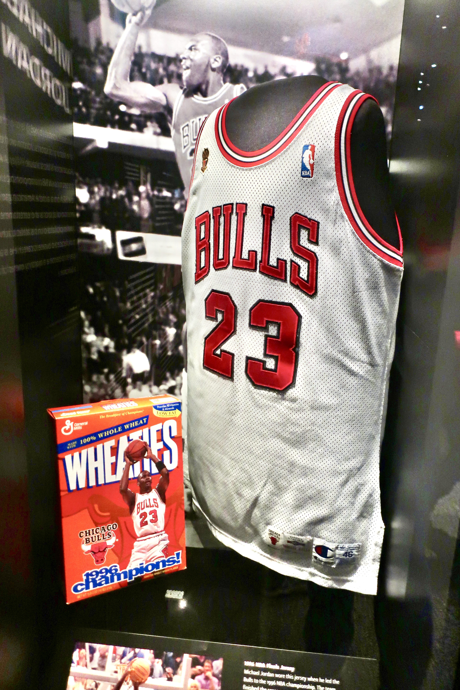
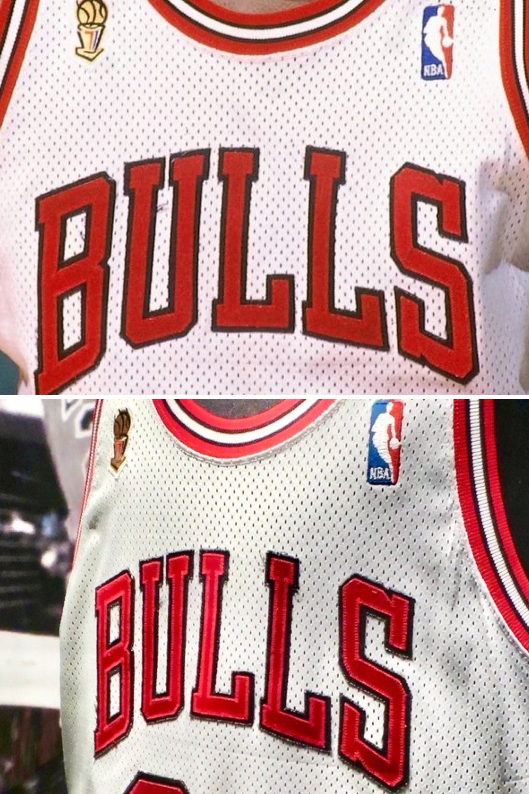

The North Carolina championship jersey is not an isolated case. Once that framework is established, similar patterns begin to emerge across other museum-held and institutionally preserved examples from Michael Jordan’s career. Garments long presented as representative display pieces can, through photographic comparison and archival research, be more precisely understood as directly traceable artifacts from defining moments on the court.


This was not an isolated example.
The uniforms, originally documented within a Nike campus display photographed in 2011, are no longer publicly visible. At the time, they were presented as representative Chicago Bulls garments from the late 1980s and early 1990s.
Through archival research and photographic comparison, both jerseys can now be confirmed as game-worn examples, each tied to distinct periods of on-court use.
The red road uniform, carrying 1987–88 Sand-Knit production tagging, can be identified through multiple game images from the 1989–90 season.
Matches extend from March through the Eastern Conference Finals, demonstrating that the garment remained in active rotation well beyond its original production cycle.
Within the same installation, a white home jersey provides an even clearer point of reference.
Upon archive research we have determined this Chicago Bulls home jersey is attributed to the 1990–91 season and can be confirmed through photographic comparison as a game-worn example from the 1991 NBA Finals against the Los Angeles Lakers.
The garment is tied directly to Jordan’s first championship, placing it within one of the most significant moments of his professional career.
Viewed together, the two artifacts illustrate a critical distinction—between production and use—while also confirming that both garments represent authentic on-court wear from defining stages of Jordan’s career.

Visible for decades.
Only now fully understood.

In some cases, the path of a jersey bypasses the market entirely.
Following the 1988 NBA All-Star Game, Jordan’s jersey was given to Joe O’Brien, director of the Basketball Hall of Fame, and entered institutional preservation almost immediately.
The garment was then displayed at the Hall of Fame through the late 1980s and into the early 1990s before eventually being retired from view.
Rather than passing through the collecting space, the jersey moved directly from game use into long-term public display.
Archival research now clarifies the significance of that preserved artifact more precisely.
Through photographic comparison, the jersey can be confirmed as the game-worn example from the 1988 NBA All-Star Game, tying the object directly to one of the defining showcase events of Jordan’s early career.
In that sense, the jersey represents more than a ceremonial display piece. It stands as a documented artifact that moved directly from the court into institutional custody, effectively removing it from the market the moment its playing life ended.

Barcelona, 1992

By this stage, the pattern extends beyond the NBA itself.
Preserved within the North Carolina Tar Heels basketball museum is a United States Olympic jersey attributed to Michael Jordan from the 1992 Summer Games. The display remains in place today, continuing to present the garment as part of the broader history surrounding Jordan’s international career.
Through research conducted by the Archive, the jersey can be matched to two games from the medal round of the 1992 Olympic tournament. The example shown here is conclusive with imagery from the July 27 game against Croatia, with an additional match identified from the following game against Germany.

That distinction materially expands what can be documented about the surviving body of Jordan’s Olympic uniforms.
Rather than standing only as a representative artifact of the Dream Team era, the jersey can be placed within specific on-court use during the medal round, tying it directly to the most consequential stage of the tournament.
In this context, the garment shifts from symbolic representation to a defined object within the historical record.
Washington, 1996

By the mid-1990s, the same pattern reaches the highest level of institutional preservation.
Preserved within the Smithsonian National Museum of African American History and Culture is a Chicago Bulls home jersey from the 1995–96 season—one of the most historically significant surviving garments from Jordan’s championship years.

Research conducted through the Archive indicates that the jersey was not only worn during the 1996 Finals, but can be traced as far back as February, continuing through the end of the regular season and then into the playoffs, and finally into the championship series.
In that sense, the garment represents far more than a ceremonial Finals artifact. It preserves a continuous record of use across one of the most dominant seasons in basketball history.
Jordan’s decision to donate the jersey to the Smithsonian Museum also further confirms that some of the most important garments from his career were preserved institutionally rather than entering the collecting market at all and will likely never make it to the collecting public.
As with the earlier examples, the jersey’s public visibility did not fully convey the depth of its documented use.
Through archival research and photographic comparison, the garment can be understood not simply as a representative object from the 1995–96 season, but as a directly traceable artifact from Jordan’s fourth championship run.
Conclusion
When considered together, these artifacts reveal a broader reality about the surviving body of Michael Jordan game-worn material.
A number of significant garments are already accounted for within museum collections and institutional holdings. Though publicly visible, these pieces exist outside of the active market and are unlikely to re-enter circulation.
When viewed alongside documented population data within the Jersey Index—where certain seasons are represented by as few as a single home and road uniform—the effective availability becomes increasingly limited.
Additional factors further reduce this population. Several jerseys have been segmented through the trading card industry, while others remain held within institutional or player-controlled collections.
In this context, rarity is not defined by how many jerseys exist, but by how many remain obtainable.
The result is a population that is at once visible and inaccessible—preserved in plain sight, yet largely beyond reach.
Acknowledgements: The Michael Jordan Archive would like to thank the collectors and hobbyists who have shared information, imagery, and artifacts that helped inform the ongoing documentation of Michael Jordan’s game-worn artifacts.